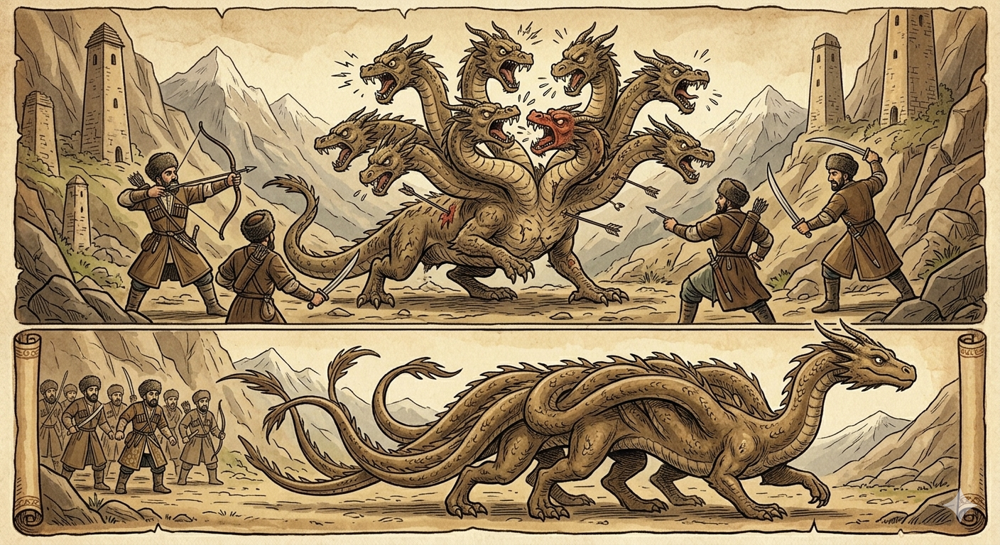

И.А. Дахкильгов. Хьехаме дувцарш - поучительные рассказы-притчи.
И.А. Дахкильгов. Хьехаме дувцарш - поучительные рассказы-притчи. Из ингушского фольклора.

Корт цаӀ хила беза
Цхьан хана бахаш хиннаб ийс корти цхьа дегӀи долаш хинна сармак. Нахаца тӀом беча хана, хӀарача керто шиший хьехараш а деш, тувлабенна биса сармак хӀалакахиннаб. Нах тӀанийсбеннаб кхыча сармака. Ийс дегӀи цхьа корти хиннаб цун. Цхьан керто яхачунга ла а догӀаш, цу ийссе дегӀо котало а яьккха, сармак кӀалхара баьнна дӀабахаб. МоллагӀа долча хӀаман хьаькъал дола ийс да хулачул толашагӀа да Ӏовдала вале а цхьа да хилар.
РУССКИЙ
Голова должна быть одна
Жил некогда сармак-дракон с девятью головами и одним телом. Когда на него напали люди, то между этими головами произошел разлад, и люди легко убили это чудовище. Затем люди встретили другого сармака, который имел десять тел, а голову имел только одну. Это чудовище сумело сохранить все свои десять тел и ушло невредимым. А все потому, что у него была одна голова и все десять тел подчинялись ей одной. Любое дело должно иметь одного хозяина, пусть даже дурного, и не должно иметь много хозяев, даже будь они все умниками.
ENGLISH
There can only be one head
Once upon a time, there lived a nine-headed, single-bodied Sarmax dragon. When humans attacked, the dragon's many heads argued amongst themselves, allowing the humans to easily slay the monster. Later, the humans encountered another sarmax dragon with ten bodies and one head. This monster managed to preserve all ten of its bodies and escaped unharmed. This was all because it had a single head, and all ten bodies obeyed it. Any undertaking must have a single leader, even if they are a bad leader, and must not have many leaders, even if they are all wise.
НОХЧИЙН
Корта цхьаъ хила беза
Цхьана хенахь бехаш хилла исс кортий цхьа деггӀий долуш хилла саьрмак. Нахаца тӀом бечу хенахь, хӀор коьрто ше-ше хьехарш а деш, тила белла бисна саьрмак хӀаллак хилла. Нах тӀенисбелла кхечу саьрмакна. Исс деггӀий цхьа кортий хилла цуьнан. Цхьана коьрто бохучуьнга ла а дугӀуш, цу иссе дегӀо толам а баьккхина, саьрмак кӀелхьара баьлла дӀабахна. Муьлха а долчу хӀуманна хьекъал долу исс да хуьлучул тоьлуш ду Ӏовдал валахь а цхьа да хилар.
ПОГОВОРКИ
Аьхки вагӀачун болар Ӏай кадай хиннад. - Кто летом отсиживался, у того зимой походка бывает шустрой.“БӀук” яхаш лелачоа а духьала ваьннав цхьа “БӀук”. - Задира непременно наткнется на другого задиру.Данза даргдоаца хӀама сихагӀа дӀадоладе; ала дезача дош ала. - Быстрее начинай то, что сделать необходимо; а там, где надо сказать, немедля скажи свое слово.Лергех вир дайзад, йоагӀача хьажах хьакха ейзай. - По ушам осла узнали, по запаху – свинью.Цкъа яьннача топо ши пхьагал йийнаяц. - Одним выстрелом двух зайцев не убить.Ялсамале мелла дика яле а, дуненах хада безам болаш саг вац. - Как ни прекрасен рай, все же этот мир покидать никто не хочет.Ди вира таралеста хийла моттигаш я. - Нередко случается, что конь в осла превращается.Паччахьа вордо пхьагал лаьцай. - Царская карета зайца поймала.Ханнахьа дӀадийнар ханнахьа тӀадоал, бера хана Ӏомадаьр хьалкхийча накъадоал. - Вовремя посеянное вовремя созрело, в детстве выученное на всю жизнь сгодилось.Эйла юкъе даьккхача кочъяргах хачиярг хиннадац. - Из материи, которой хватает на рубаху, не сошьешь и брюк, если материя ходила по рукам.Хийла къайго лаьча Ӏехадаьд. - Случается, и ворона перехитрит сокола.